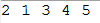

冒泡排序（Bubble Sort，台湾译为：泡沫排序或气泡排序）是一种简单的排序算法。它重复地走访过要排序的数列，一次比较两个元素，如果他们的顺序错误就把他们交换过来。走访数列的工作是重复地进行直到没有再需要交换，也就是说该数列已经排序完成。这个算法的名字由来是因为越大的元素会经由交换慢慢“浮”到数列的顶端，故名。
算法描述：
- i从0开始，i与i+1比较，如果i>i+1，那么就互换
- i不断增加，直到i<n-1（n是数组元素的个数，n-1是数组已经最后一个元素） ，一趟下来，可以让数组元素中最大值排在数组的最后面
从最简单开始，首先我们创建一个数组，该数组有5位数字：
int[] arrays = {2, 5, 1, 3, 4};
一、第一趟排序
下面我们根据算法的描述来进行代码验算(第一趟排序)：
int[] arrays = {2, 5, 1, 3, 4};
//使用临时变量，让两个数互换
int temp;
//第一位和第二位比
if (arrays[0] > arrays[1]) {
//交换
temp = arrays[0];
arrays[0] = arrays[1];
arrays[1] = temp;
}
//第二位和第三位比
if (arrays[1] > arrays[2]) {
temp = arrays[1];
arrays[1] = arrays[2];
arrays[2] = temp;
}
//第三位和第四位比
if (arrays[2] > arrays[3]) {
temp = arrays[2];
arrays[2] = arrays[3];
arrays[3] = temp;
}
//第四位和第五位比
if (arrays[3] > arrays[4]) {
temp = arrays[3];
arrays[3] = arrays[4];
arrays[4] = temp;
}
for(int i=0;i<arrays.length;i++){
System.out.print(arrays[i]+" ");
}
如果前一位的数比后一位的数要大，那么就交换，直到将数组的所有元素都比较了一遍！
经过我们第一趟比较，我们可以发现：最大的值就在数组的末尾了!

一、第二趟排序
第二趟排序跟第一趟排序一样，也是用前一位与后一位比较，如果前一位比后一位要大，那就交换。值得注意的是：并不需要与最后一位比较了，因为在第一趟排序完了，最后一位已经是最大的数了。同理，我们第二趟排序完了之后，倒数第二位也是第二大的数了。
第二趟排序的代码如下：
//第一位和第二位比
if (arrays[0] > arrays[1]) {
//交换
temp = arrays[0];
arrays[0] = arrays[1];
arrays[1] = temp;
}
//第二位和第三位比
if (arrays[1] > arrays[2]) {
temp = arrays[1];
arrays[1] = arrays[2];
arrays[2] = temp;
}
//第三位和第四位比
if (arrays[2] > arrays[3]) {
temp = arrays[2];
arrays[2] = arrays[3];
arrays[3] = temp;
}
//第四位不需要和第五位比了，因为在第一趟排序结束后，第五位是最大的了。
for(int i=0;i<arrays.length;i++){
System.out.print(arrays[i]+" ");
}
System.out.println("\n");
结果：我们的第二大数已经排在了倒数第二位了

三、代码简化
值得说明的是：上面的结果看起来已经是排序好的了，其实是我在测试时数据还不足够乱，如果数据足够乱的话，是需要4(n-1)趟排序的！
但我们从上面的代码就可以发现：第一趟和第二趟的比较、交换代码都是重复的，并且我们的比较都是写死的(0,1,2,3,4)，并不通用！
我们的数组有5位数字
- 第一趟需要比较4次
- 第二趟需要比较3次
我们可以根据上面规律推断出：
- 第三趟需要比较2次
- 第四躺需要比较1次
再从上面的规律可以总结出：5位数的数组需要4躺排序的，每躺排序之后次数减1(因为前一趟已经把前一趟数的最大值确定下来了)！
于是我们可以根据for循环和变量将上面的代码进行简化：
int[] arrays = {2, 5, 1, 3, 4};
int temp;
//外层循环是排序的趟数
for (int i = 0; i < arrays.length - 1 ; i++) {
//内层循环是当前趟数需要比较的次数
for (int j = 0; j < arrays.length - i - 1; j++) {
//前一位与后一位与前一位比较，如果前一位比后一位要大，那么交换
if (arrays[j] > arrays[j + 1]) {
temp = arrays[j];
arrays[j] = arrays[j + 1];
arrays[j + 1] = temp;
}
}
}
for(int i=0;i<arrays.length;i++){
System.out.print(arrays[i]+" ");
}
四、冒泡排序优化
从上面的例子我们可以看出来，如果数据足够乱的情况下是需要经过4躺比较才能将数组完整排好序。但是我们在第二躺比较后就已经得到排好序的数组了。
但是，我们的程序在第二趟排序后仍会执行第三趟、第四趟排序。这是没有必要的，因此我们可以对其进行优化一下：
- 如果在某躺排序中没有发生交换位置，那么我们可以认为该数组已经排好序了。
- 这也不难理解，因为我们每趟排序的目的就是将当前趟最大的数置换到对应的位置上，没有发生置换说明就已经排好序了。
代码如下：
int[] arrays = {2, 5, 1, 3, 4};
//装载临时变量
int temp;
//记录是否发生了置换， 0 表示没有发生置换、 1 表示发生了置换
int isChange;
//外层循环是排序的趟数
for (int i = 0; i < arrays.length - 1; i++) {
//每比较一趟就重新初始化为0
isChange = 0;
//内层循环是当前趟数需要比较的次数
for (int j = 0; j < arrays.length - i - 1; j++) {
//前一位与后一位与前一位比较，如果前一位比后一位要大，那么交换
if (arrays[j] > arrays[j + 1]) {
temp = arrays[j];
arrays[j] = arrays[j + 1];
arrays[j + 1] = temp;
//如果进到这里面了，说明发生置换了
isChange = 1;
}
}
//如果比较完一趟没有发生置换，那么说明已经排好序了，不需要再执行下去了
if (isChange == 0) {
break;
}
}
for(int i=0;i<arrays.length;i++){
System.out.print(arrays[i]+" ");
}
五、扩展阅读
C语言实现第一种方式:
void bubble ( int arr[], int n)
{
int i;
int temp;
for (i = 0; i < n - 1; i++) {
if (arr[i] > arr[i + 1]) {
temp = arr[i];
arr[i] = arr[i + 1];
arr[i + 1] = temp;
}
}
}
void bubbleSort ( int arr[], int n)
{
int i;
for (i = n; i >= 1; i--) {
bubble(arr, i);
}
}
C语言实现第二种方式递归:
void bubble ( int arr[], int L, int R)
{
if (L == R) ;
else {
int i;
for (i = L; i <= R - 1; i++)//i只能到达R-1
if (arr[i] > arr[i + 1]) {
int temp = arr[i];
arr[i] = arr[i + 1];
arr[i + 1] = temp;
}
bubble(arr, L, R - 1);//第一轮已排好R
}
}
测试代码:
int main ()
{
int arr[] = {2, 3, 4, 511, 66, 777, 444, 555, 9999};
bubbleSort(arr, 8);
for (int i = 0; i < 9; i++)
cout << arr[i] << endl;
return 0;
}
5.1时间复杂度的理解：